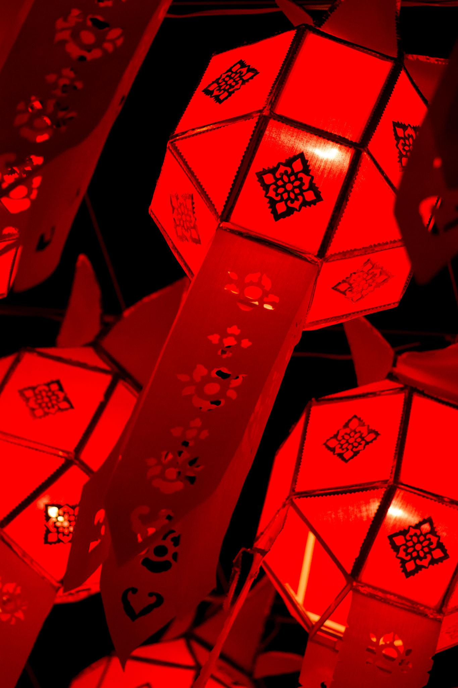
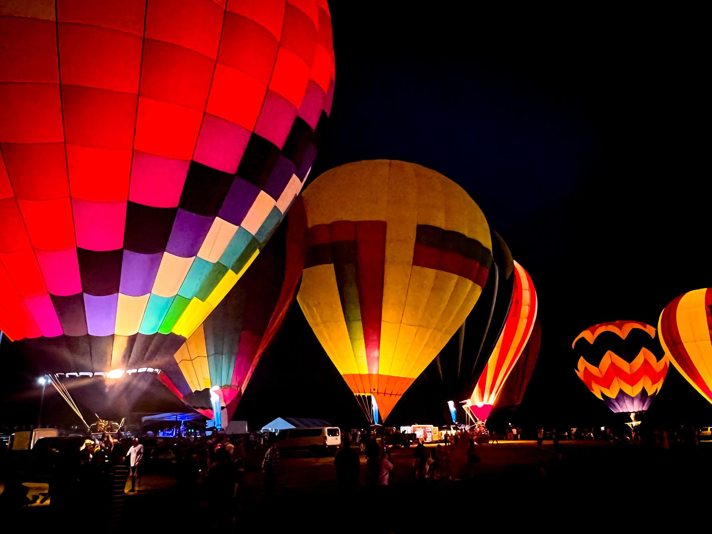
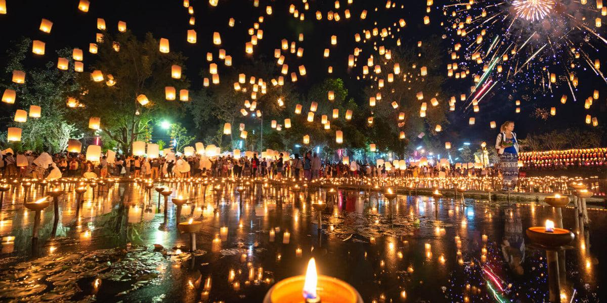
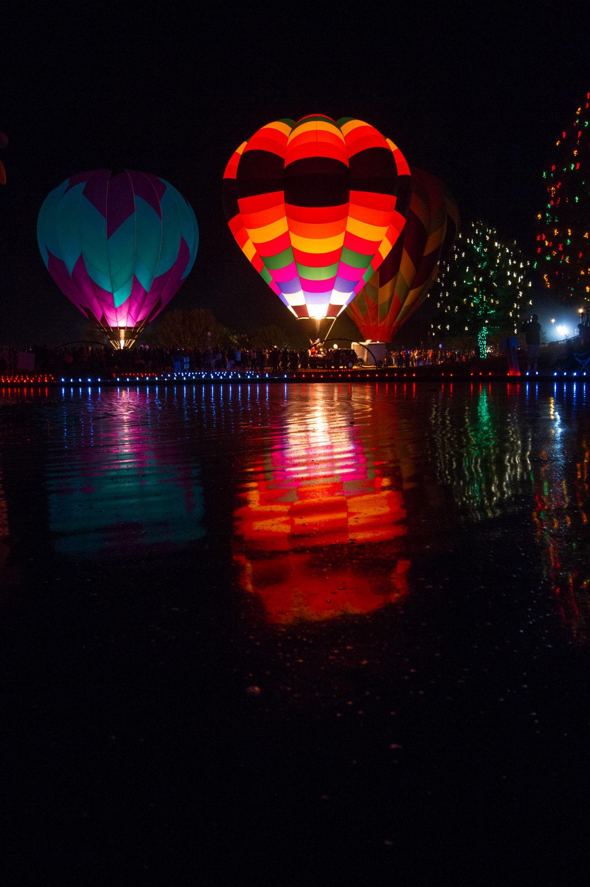

My Exciting Website
Welcome to our Fire Balloon Festival Blog, a space dedicated to the beauty and wonder of glowing skies filled with floating fire balloons. Our blog shares unforgettable festival moments through stunning images, inspiring stories, and immersive videos that capture the magic of these celebrations. From cultural traditions to breathtaking night views, we aim to bring the warmth, joy, and excitement of fire balloon festivals closer to everyone who visits our page.
Fire balloon festivals are more than just celebrations — they are magical experiences filled with
light, joy, and unforgettable memories.
Our blog is dedicated to sharing the beauty and cultural charm of these breathtaking events through
stories, photography, and videos.
We capture the glowing skies, colorful balloons, and emotional moments that make these festivals so
special. From peaceful lantern releases
to vibrant nighttime celebrations, every post reflects the wonder and excitement of the festival
atmosphere.
Through this blog, we hope to inspire travelers, photographers, and festival lovers to explore the
magic of fire balloon festivals around the world.
Every image and video shared here carries the warmth, beauty, and dream-like feeling of these
incredible celebrations.



